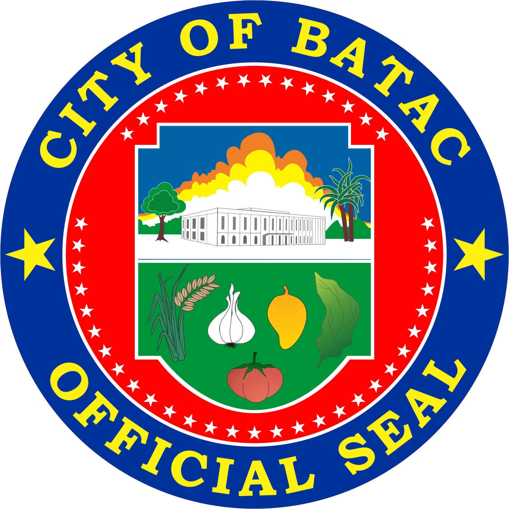

OFFICIAL GOVERNMENT PORTAL
HOME OF THE GREATS
Preserving the soul of Ilocos Norte.
A historical sanctuary dedicated to the legacy of Batac's most famous son.
A 16th-century Augustinian church, standing as a testament to Batacqueño faith.
A serene natural escape showcasing the untouched beauty of the Batac highlands.
Serving the people with integrity, transparency, and commitment to progress.
(077) 671-1725 / 677-2877
lovebatac@gmail.com
(077) 792-3120
sp@batac.gov.ph
Led by the City Mayor, responsible for implementing policies, managing city operations, and representing the city in official capacities.
The Sangguniang Panlungsod (City Council) enacts ordinances and policies for the city's development and welfare.
The Municipal Trial Court handles legal cases and ensures justice and fair resolution of disputes within the city.
The legislative body of Batac City, responsible for enacting ordinances and resolutions for the welfare of the constituents.
Committee on Education, Culture, Science & Technology; Tourism & Public Information
Committee on Social Welfare Development; Women, Children & Family Relations
Committee on Landed Estates & Assessments; Human Rights & CSOs
Committee on Games and Amusements; Good Government & Public Ethics
Committee on Health and Sanitation; Cooperatives & Livelihood
Committee on Trade, Commerce & Industry; Transportation and Communication
Committee on Laws, Rules, Ethics & Privileges; Senior Citizens & NGOs
Committee on Public Works & Infrastructure; Agriculture & Food
Committee on Peace and Order & Public Safety; Labor & Employment
ABC President - Barangay Affairs & Special Projects
SK Federation President - Youth & Sports Development
Executive and administrative affairs
Legislative affairs & council support
Administrative coordination
Personnel and property management
Financial planning and management
Accounting and audit functions
Revenue collection & disbursement
Property assessment & taxation
Infrastructure and public works
Public health and medical services
Urban planning and zoning
Vital records and documentation
Legal counsel and litigation
Agricultural programs & support
Social services & assistance
Environmental protection
Access annual budget documents, financial statements, and audit reports for full fiscal transparency.
City appropriations ordinance
Quarterly financial reports
Service standards & procedures
Local legislation records
Procurement documents
Seal of Good Local Governance
Efficient, transparent, and citizen-centered public services for all Batacqueños.
(077) 792-3120
(077) 792-3030
(077) 792-3333
Register your new business and obtain the necessary permits to operate legally in Batac City.
Renew your existing business permit annually. Available online through BOSS portal.
Apply for construction, renovation, or demolition permits for residential and commercial structures.
Request certified copies of birth certificates for identification, enrollment, and legal purposes.
Obtain certified copies of marriage certificates and apply for marriage licenses.
Request certified copies of death certificates for legal and administrative requirements.
Pay your real property taxes online or at the City Treasurer's Office. Early payment discounts available.
Obtain tax clearance certificates required for business permits and property transactions.
Request property valuation, transfer of ownership, and tax declaration updates.
Free vaccination services for children and adults at city health centers and barangay health stations.
Health certificates for employment, school enrollment, and food handler permits.
Financial assistance, livelihood programs, and support services for indigent families.
Report road damages, potholes, and request street repairs in your barangay.
Report non-functional street lights and request installation of new lighting fixtures.
Report drainage issues, flooding areas, and request canal cleaning services.
Monday to Friday: 8:00 AM - 5:00 PM (No Noon Break)
Saturday, Sunday & Holidays: Closed
For urgent matters outside office hours, please contact the emergency hotlines.
Experience the rich history, vibrant culture, and unforgettable flavors of the Home of the Greats.
Walk through history and discover the stories that shaped a nation
The city's most prominent attraction, this museum complex houses extensive exhibits of memorabilia, photographs, and documents chronicling the life and presidency of Ferdinand E. Marcos. The preserved body of the former president is also on display at the mausoleum, making it a significant historical site for understanding Philippine political history.
The childhood home of Ferdinand Marcos, preserved to showcase the simple beginnings of the former president. Features original furniture and personal belongings of the Marcos family.
A stunning 16th-century Augustinian church showcasing Spanish colonial Baroque architecture. Features ornate interiors, historical relics, and serves as a testament to Batacqueño faith and heritage.
A tribute to the "Father of the Philippine Army," featuring a museum with memorabilia and documents from the Philippine-American War era, set in a beautifully manicured park.
An iconic Spanish-era bell tower standing beside the Immaculate Conception Church. A beautiful example of colonial architecture and a popular spot for photography.
Escape to the serene beauty of Batac's natural wonders
A serene natural escape showcasing the untouched beauty of the Batac highlands. This hidden gem offers a refreshing swimming experience surrounded by lush vegetation and towering rock formations.
The journey to the falls involves a scenic trek through the countryside, making it perfect for adventure seekers and nature lovers alike. Best visited during the dry season (November to April) when the trails are more accessible.
No visit to Batac is complete without tasting the iconic Batac Empanada – a distinctive Ilocano pastry that has become the city's culinary pride and identity.
Unlike ordinary empanadas, the Batac version features a distinctive orange-colored crust made from rice flour and is deep-fried to crispy perfection. The filling is a savory combination of:
Where to eat: Visit the Riverside Empanadaan near the church, open from 7:30 AM. Pro tip: Go early to avoid the crowds that form around 6 PM!
A garlicky, slightly sour native sausage that's a staple in every Ilocano breakfast. Best paired with garlic rice and fresh eggs.
A traditional vegetable dish cooked with bagoong (fermented fish paste), featuring local vegetables like ampalaya, squash, and eggplant.
Every December, Batac comes alive with the Empanada Festival – a vibrant celebration of the city's culinary heritage and founding anniversary.
The festival features colorful street pageantry with village representatives, exciting contests on empanada preparation and cooking, cultural performances, and spectacular fireworks displays.
It's the perfect time to experience Batac's rich culture and taste the best empanadas from local vendors competing for the top spot!
November to April (Dry Season)
30-40 mins from Laoag City
Ilocano, Filipino, English
Most attractions are free!
Ready to explore Batac? Contact our Tourism Office for guided tours, itinerary suggestions, and local recommendations. We're here to make your visit unforgettable!
Stay updated with the latest from the City Government of Batac
The City Government of Batac announces job openings for various positions. Interested applicants may submit their requirements to the Human Resource Office at the City Hall Building during office hours.
The City Government of Batac, through the City Health Office, successfully conducted its 1st Quarter Blood Donation Drive to help sustain the city's blood bank and ensure that safe blood is available for those in need. The activity gathered volunteer donors from the community, barangay frontliners, and national government agencies who willingly gave blood to support the cause.
The City of Batac placed 5th among 22 cities and municipalities at the Tan-ok ni Ilocano Festival of Festivals 2026, while also winning the Innovation Prize and Best Male Performer. Batac's Empanada Festival presentation told a touching story of the Ilokano spirit during Christmas — a season when generosity grows even in times of little.
Dr. Mara Medina Borleo, Sangguniang Panlungsod Member and official representative of the City of Batac, was crowned Ms. Red Cross 2026 on February 19 during the coronation night held in Laoag City as part of the Pamulinawen Festival. The Search for Ms. Red Cross is a fundraising initiative of the Philippine Red Cross Ilocos Norte Chapter.
We're here to serve you. Reach out to us through any of the following channels.
City Hall Building
Washington St., Brgy. 1-S Valdez
City of Batac, Ilocos Norte 2906
Office Hours
Monday - Friday: 8:00 AM - 5:00 PM
Mayor's Office
(077) 671-1725 / 677-2877
Emergency / CDRRMO
(077) 792-3120
Email
lovebatac@gmail.com